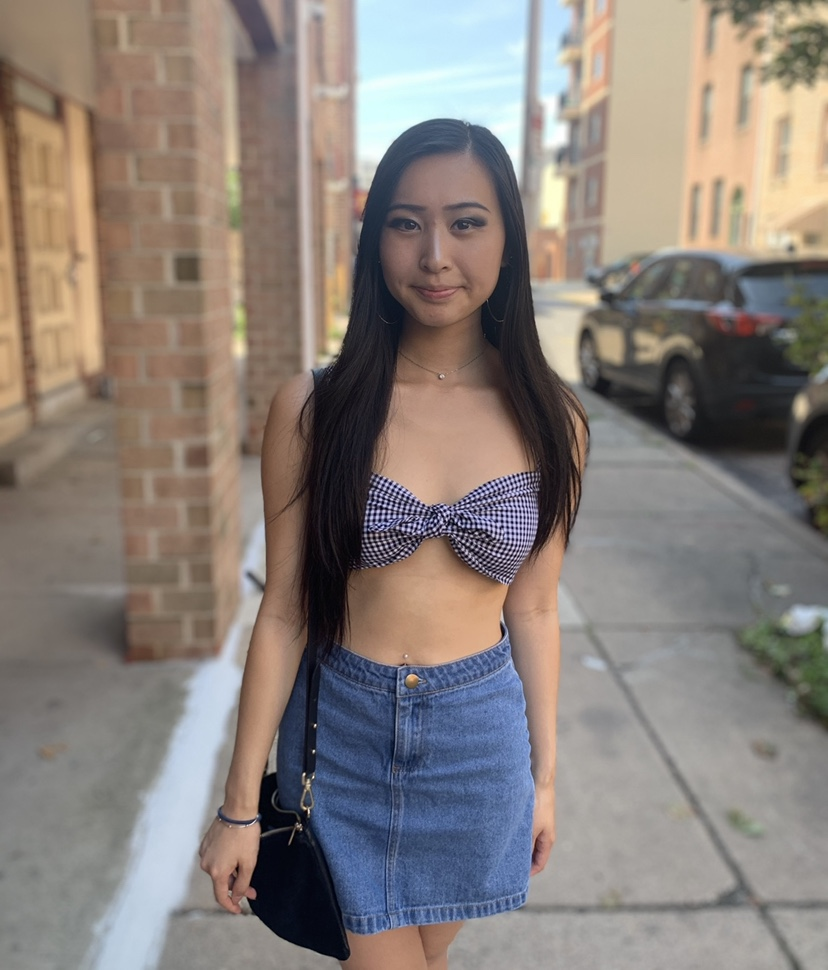
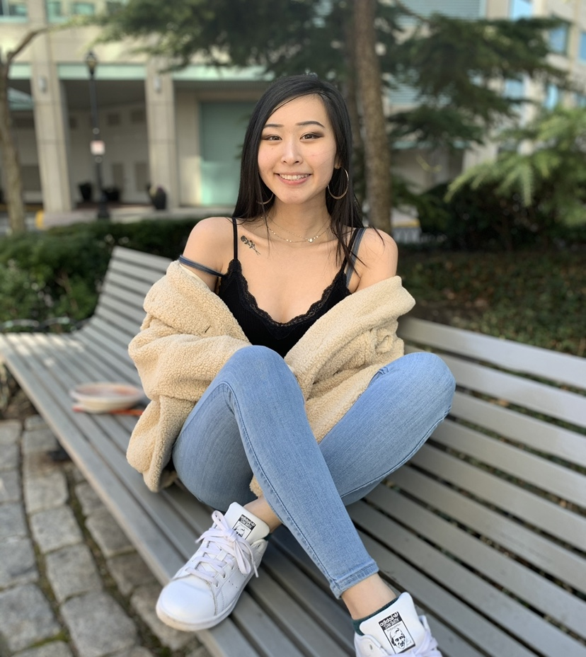
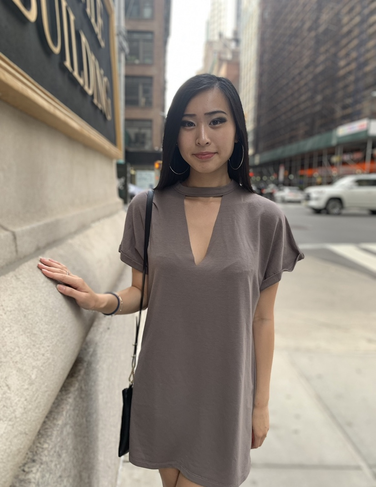
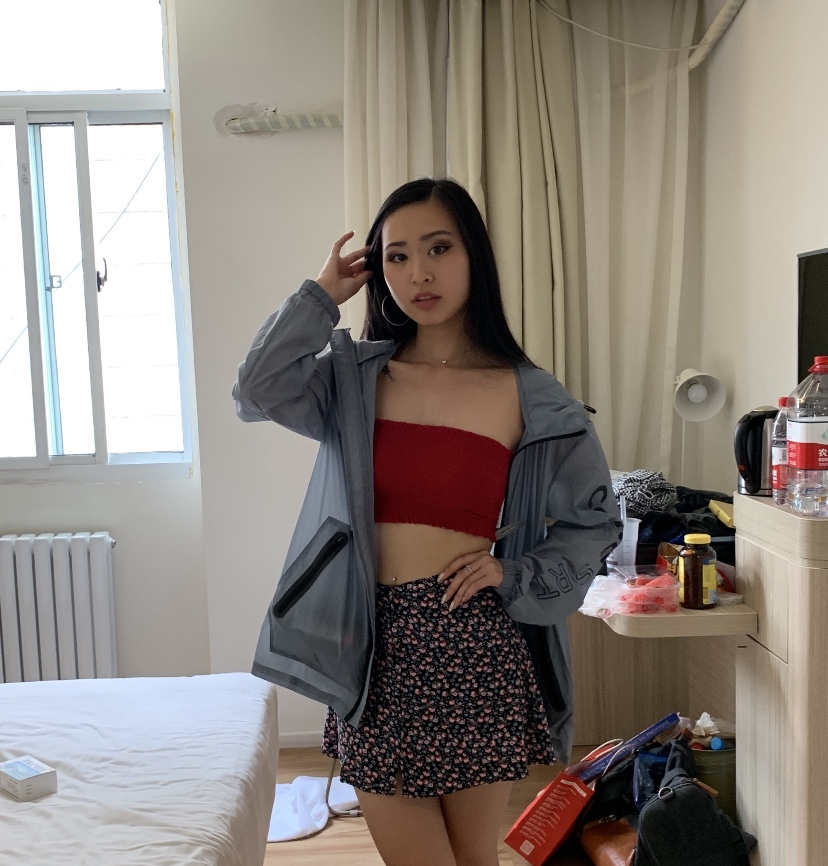

This spring has been a little sad since we’re all in quarantine and social distancing, but at least it’s more time to plan out cute outfits for when we finally get to go outside! ;)
Here’re six simple outfits for spring that you can make with basic pieces already in your closet!
Jean skirts are timeless and so is gingham! I’ve had this jean skirt from H&M for years now and it’s a great basic piece to match with so many different tops. I got this front-tie bandeau from Forever21 and I had been looking for something like this for so long. Of course, feel free to throw on a light cardigan if it gets chilly!
I’m a sucker for a good fitting bodycon dress, especially if it’s casual enough for me to wear on a regular basis! This is a perfect example, a soft lavender off-shoulder dress with a simple button-down detail. I think anything off-shoulder is what I wear for spring haha, but I honestly think it’s such a cute outfit that’s so easy to throw on and look put together, especially in spring colors!
Another easy outfit is to slip on basics and play around with different textures. I threw on this simple black v-neck crop top with a burgundy velvet-texture mini skirt. I always stock up on basic crop tops in black and white for easy outfits like this. Both pieces are easy to find in most stores and can easily be dressed up or down depending on your shoes or bag!
I don’t know about you guys, but if I have to wear jeans, I’ll choose jeggings over them any day (I’m still unsure why people still wear normal jeans??). I love throwing on tis super comfortable pair of jeggings from Hollister and pairing it with a simple crop top (and a teddy coat if it gets chilly!). The crop top has lace detailing so it looks more detailed, pair this with a pair of hoop or statement earrings and you have an easy outfit!
The next outfit is probably the easiest of them all to style, a cutout t-shirt dress, or any t-shirt dress tbh, is the best comfy-day outfit! I got this from Forever21 and it came with a V-neck cutout but you could easily DIY something like this yourself. I really like that I can throw on a pair of booties and a simple shoulder bag to look like I put effort into getting dressed LOL.
My last outfit is the definition of what I think people mean when they say “sporty chic” lul. I love bandeaus in the summer but I try to break them out in the spring too because they’re so easy to pair with other bottoms. I’m wearing a red bandeau top with a floral skirt with a thin sports jacket. I love the silhouette of this look and it looks super cute with the jacket tied around your waist too!
These are my favorite easy outfits for spring, lmk if there’s any you guys want to share too hello@withlovesandra.com